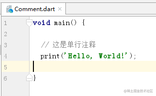
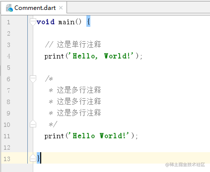
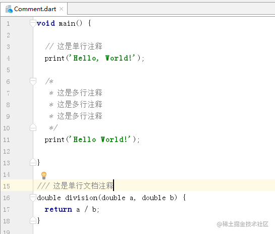

Dart 注释


2018年09月22日 15:52 · 阅读 240
一、什么是注释
注释呢就是用于解释和说明代码的，适当地注释代码可增强代码的可读性的，Dart 也是支持注释的，注释一般是不会影响到代码的执行的，除了 HTML 的条件注释，这里说的是 Dart ，注释自然对 Dart 的代码执行是没影响的。
二、单行注释
单行注释就是只有一行的注释，单行注释比较方便，以 "//" 开头，"//" 后面写注释内容。

三、多行注释
多行注释是可以跨越多行的，多行文档注释是以 "/*" 开头的， 接着写注释内容
最后 "*/" 结束

多行注释写成一行也是可以的

有些人喜欢这种风格的多行注释，每行注释前面加个 *

四、文档注释
文档注释是用于代码文档编写的，Dart SDK 有个 dartdoc 工具，用于生成文档的，具体可以看这里 Dart SDK 工具生成文档
文档注释也有分单行和多行的；
（一）单行文档注释
单行文档注释是以 "///" 开头的，三个 ‘'/" ，后面写内容

（二）多行文档注释
多行文档注释是以 "/**" 开头的，后面写注释内容
最后 "*/" 结束